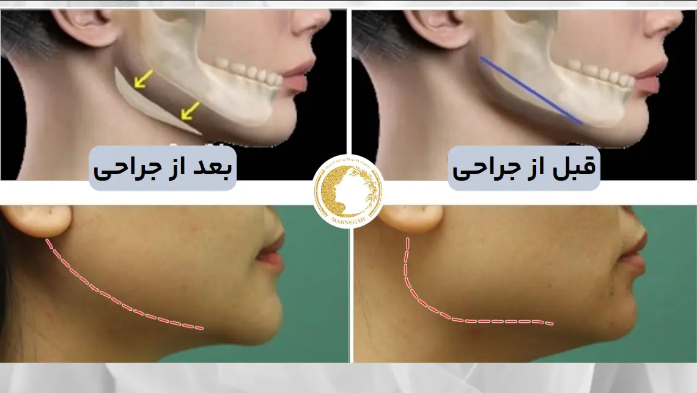
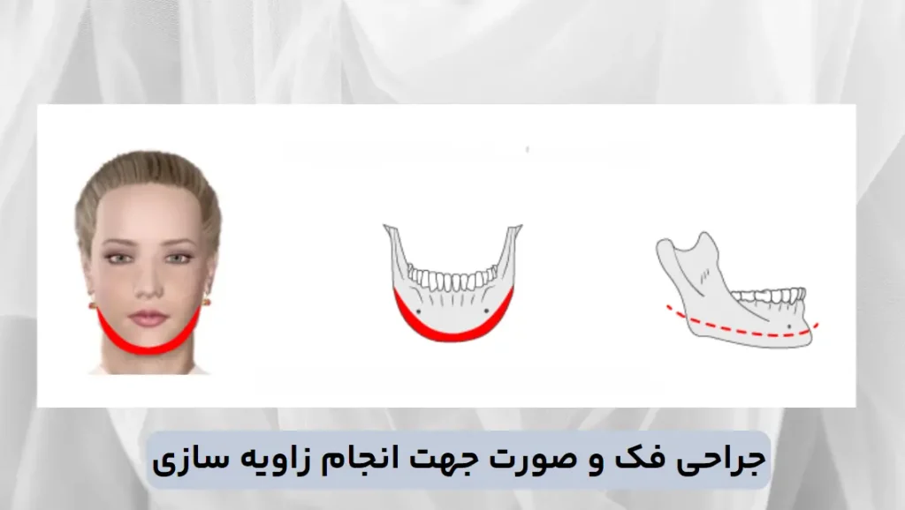
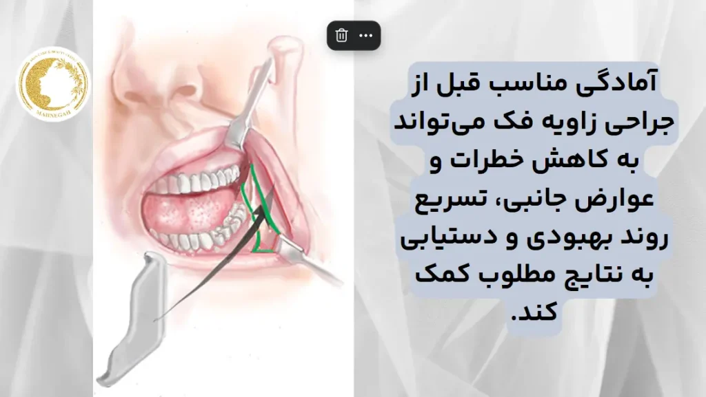
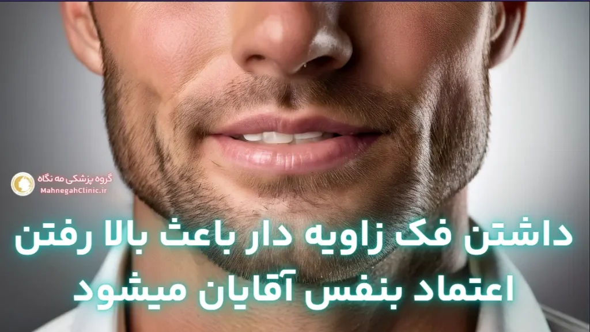
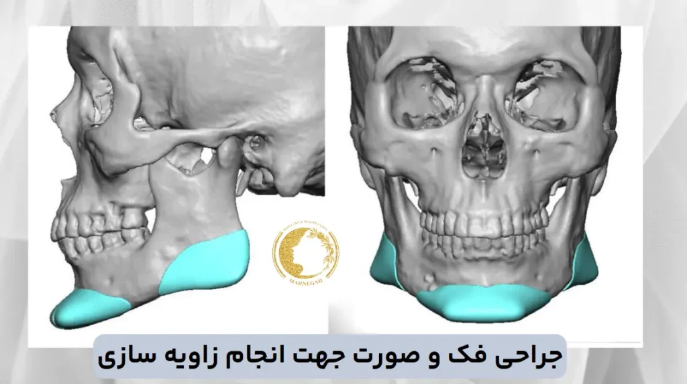

خانه / مجله / زاویه سازی فک
جراحی زاویه فک چیست + چه کسانی کاندید مناسب هستند

جراحی زاویه فک (عمل زاویه فک) چیست و چه کسانی کاندید مناسب هستند؟
جراحی زاویه سازی فک (عمل زاویه فک) و صورت چیست؟
جراحی زاویه فک یا جراحی کانتورینگ فک، یک روش جراحی زیبایی است که به منظور بهبود شکل و ظاهر فک و چانه انجام میشود.
در این روش، جراح با تغییر شکل استخوان فک و یا اضافه کردن ایمپلنت، به فک شما زاویه و برجستگی بیشتری میبخشد. این جراحی میتواند به صورت مجزا یا در ترکیب با سایر جراحیهای زیبایی صورت مانند جراحی بینی یا لیفت صورت انجام شود.
چه کسانی کاندید مناسبی برای جراحی زاویه فک هستند؟
جراحی زاویه فک (عمل زاویه فک) برای افرادی که دارای شرایط زیر هستند، میتواند مناسب باشد:
- فک ضعیف یا نامتقارن: افرادی که فک آنها به طور طبیعی کوچک، عقب رفته یا نامتقارن است، میتوانند از این جراحی بهرهمند شوند.
- چانه کوچک یا عقب رفته: جراحی زاویه فک میتواند به بهبود ظاهر چانه و ایجاد تعادل بیشتر در چهره کمک کند.
- غبغب: در برخی موارد، جراحی زاویه فک میتواند به کاهش غبغب و بهبود خط فک کمک کند.
- سلامت عمومی خوب: کاندیدهای ایدهآل برای این جراحی باید از سلامت عمومی خوبی برخوردار باشند و هیچ گونه بیماری زمینهای نداشته باشند که روند بهبودی را مختل کند.
- انتظارات واقعبینانه: مهم است که کاندیدها انتظارات واقعبینانهای از نتایج جراحی داشته باشند و درک کنند که جراحی نمیتواند تمام مشکلات زیبایی را برطرف کند.

انواع جراحیهای زاویهسازی فک (عمل زاویه فک)
جراحی ایمپلنت فک (Mentoplasty)
در این روش، جراح یک ایمپلنت جامد از جنس سیلیکون یا مواد دیگر را در ناحیه چانه یا فک قرار میدهد تا حجم و برجستگی آن را افزایش دهد.
این ایمپلنتها به طور سفارشی برای هر بیمار طراحی میشوند تا با آناتومی صورت آنها هماهنگی داشته باشند و نتایج طبیعی و زیبایی را ایجاد کنند.
جراحی ایمپلنت فک معمولاً تحت بیهوشی عمومی انجام میشود. برشها در داخل دهان یا زیر چانه ایجاد میشوند تا جای زخمها قابل مشاهده نباشند.
جراحی استئوتومی فک (Orthognathic Surgery)
جراحی استئوتومی فک یک روش پیچیدهتر است. در این روش جراح استخوان فک را برش داده و تغییر شکل میدهد تا زاویه و برجستگی آن را بهبود بخشد.
این روش میتواند برای اصلاح ناهنجاریهای فک مانند جلو آمدگی فک پایین (آندربایت) یا عقب رفتگی فک پایین (اوربایت) نیز استفاده شود.
جراحی استئوتومی فک معمولاً تحت بیهوشی عمومی انجام میشود و برشها در داخل دهان ایجاد میشوند.
علاوه بر این دو روش اصلی، در برخی موارد ممکن است از روشهای دیگری مانند لیپوساکشن یا لیفت گردن نیز برای بهبود خط فک و ایجاد ظاهری خوشتراشتر استفاده شود.
انتخاب روش مناسب برای جراحی زاویه سازی فک به عوامل مختلفی مانند آناتومی صورت، اهداف زیبایی، سلامت عمومی و ترجیحات شخصی بستگی دارد. جراح پلاستیک صورت با ارزیابی دقیق شرایط شما و بررسی تمامی جوانب، بهترین روش را برای دستیابی به نتایج مطلوب و طبیعی پیشنهاد خواهد کرد.
مزایای جراحی زاویه سازی فک (عمل زاویه فک)
جراحی زاویه سازی فک علاوه بر بهبود ظاهر و تناسب چهره، مزایای دیگری نیز دارد که میتواند به افزایش اعتماد به نفس و بهبود کیفیت زندگی افراد کمک کند. در ادامه به برخی از مهمترین مزایای این جراحی میپردازیم:
بهبود زیبایی و تناسب چهره
- برجستهسازی خط فک: جراحی زاویه فک به فک شما زاویه و برجستگی بیشتری میبخشد و باعث میشود چهره شما خوشتراشتر و جذابتر به نظر برسد.
- تعادل و هماهنگی چهره: این جراحی میتواند به بهبود تعادل و هماهنگی اجزای صورت کمک کند و ظاهری متناسبتر و زیباتر ایجاد کند.
- کاهش غبغب: در برخی موارد، جراحی زاویه فک میتواند به کاهش غبغب و بهبود خط فک کمک کند و ظاهری جوانتر و شادابتر به شما ببخشد.
- جوانسازی چهره: با افزایش سن، پوست و بافتهای صورت شل میشوند و خط فک ممکن است کمتر مشخص شود. جراحی زاویه فک میتواند به جوانسازی چهره و ایجاد ظاهری شادابتر کمک کند.
افزایش اعتماد به نفس
- بهبود تصویر ذهنی: داشتن یک فک خوشتراش و متناسب میتواند به بهبود تصویر ذهنی افراد از خودشان کمک کند و باعث شود احساس بهتری نسبت به ظاهر خود داشته باشند.
- افزایش اعتماد به نفس در روابط اجتماعی: اعتماد به نفس بالا در روابط اجتماعی و حرفهای بسیار مهم است. جراحی زاویه فک میتواند به افزایش اعتماد به نفس افراد در این زمینهها کمک کند.
- کاهش خجالت و اضطراب: برخی افراد ممکن است به دلیل ظاهر فک خود احساس خجالت یا اضطراب کنند. جراحی زاویه فک میتواند به کاهش این احساسات منفی کمک کند و به آنها اجازه دهد تا با اعتماد به نفس بیشتری در جامعه حضور پیدا کنند.
معایب و خطرات جراحی زاویهسازی فک
هر چند جراحی زاویه سازی فک میتواند نتایج چشمگیری در بهبود ظاهر و افزایش اعتماد به نفس داشته باشد، اما مانند هر جراحی دیگری، با خطرات و عوارض جانبی احتمالی همراه است.
آگاهی از این موارد به شما کمک میکند تا تصمیمی آگاهانهتر در مورد انجام این جراحی بگیرید.
عوارض جانبی احتمالی (عمل زاویه فک)
- درد و تورم: پس از جراحی، درد و تورم در ناحیه فک و صورت طبیعی است. این عوارض معمولاً با داروهای مسکن و کمپرس سرد قابل کنترل هستند و به تدریج کاهش مییابند.
- کبودی: ممکن است در اطراف فک و صورت کبودی ایجاد شود که معمولاً ظرف چند هفته بهبود مییابد.
- بیحسی: بیحسی موقت در لب پایین، چانه و دندانها ممکن است پس از جراحی رخ دهد. این بیحسی معمولاً ظرف چند هفته یا چند ماه برطرف میشود، اما در موارد نادر ممکن است دائمی باشد.
- عفونت: هر چند نادر است، اما احتمال عفونت در محل جراحی وجود دارد. رعایت دقیق بهداشت دهان و دندان و مصرف آنتیبیوتیکهای تجویز شده توسط پزشک، خطر عفونت را کاهش میدهد.
- آسیب عصبی: در موارد بسیار نادر، ممکن است آسیب به اعصاب صورت رخ دهد که میتواند باعث ضعف یا فلج عضلات صورت شود. انتخاب یک جراح مجرب و ماهر میتواند این خطر را به حداقل برساند.
- مشکلات تنفسی: در برخی موارد، تورم پس از جراحی میتواند باعث مشکلات تنفسی شود. در صورت بروز این مشکل، باید فوراً به پزشک مراجعه کنید.
- عدم تقارن: اگرچه جراح تمام تلاش خود را برای ایجاد تقارن در فک میکند، اما ممکن است در برخی موارد عدم تقارن جزئی رخ دهد.
دوره نقاهت و بهبودی
- درد و تورم: در روزهای اول پس از جراحی، درد و تورم قابل توجهی خواهید داشت که به تدریج کاهش مییابد.
- رژیم غذایی محدود: در ابتدا، باید از غذاهای نرم و مایعات استفاده کنید و به تدریج با بهبودی، رژیم غذایی خود را به حالت عادی بازگردانید.
- محدودیتهای فعالیت: برای چند هفته پس از جراحی، باید از فعالیتهای سنگین و ورزش خودداری کنید.
- بازگشت به کار و فعالیتهای اجتماعی: بسته به نوع جراحی و روند بهبودی، ممکن است بتوانید پس از یک تا دو هفته به کار و فعالیتهای اجتماعی خود بازگردید.
قبل از تصمیمگیری در مورد جراحی زاویه فک، حتماً با پزشک خود در مورد تمامی خطرات و عوارض جانبی احتمالی صحبت کنید و اطمینان حاصل کنید که انتظارات واقعبینانهای از نتایج جراحی دارید.

آمادگی برای جراحی زاویهسازی فک (عمل زاویه فک)
آمادگی مناسب قبل از جراحی زاویه فک میتواند به کاهش خطرات و عوارض جانبی، تسریع روند بهبودی و دستیابی به نتایج مطلوب کمک کند.
در این مرحله، همکاری نزدیک با جراح و رعایت دستورالعملهای او بسیار حائز اهمیت است.
مشاوره با پزشک و ارزیابی
- مشاوره اولیه: در جلسه مشاوره اولیه، جراح پلاستیک صورت شما را معاینه میکند، سابقه پزشکی شما را بررسی میکند و در مورد اهداف زیبایی شما صحبت میکند. همچنین، جراح به شما در مورد روشهای مختلف جراحی زاویه فک، مزایا، معایب و خطرات آنها توضیح خواهد داد.
- ارزیابی دقیق: جراح ممکن است از عکسها و تصویربرداریهای سهبعدی برای ارزیابی دقیق آناتومی صورت شما و طراحی برنامه جراحی استفاده کند. این ارزیابی به جراح کمک میکند تا بهترین روش را برای شما انتخاب کند و نتایج طبیعی و هماهنگ با سایر اجزای صورت شما ایجاد کند.
آزمایشات و تصویربرداریهای لازم
- آزمایش خون: قبل از جراحی، ممکن است نیاز به انجام آزمایش خون برای بررسی سلامت عمومی شما و اطمینان از عدم وجود بیماریهای زمینهای باشد.
- تصویربرداری: ممکن است نیاز به انجام تصویربرداریهایی مانند اشعه ایکس یا سی تی اسکن از فک و صورت باشد تا جراح بتواند ساختار استخوانی شما را به دقت بررسی کند و برنامه جراحی را بر اساس آن تنظیم کند.
- ارزیابی دندانپزشکی: در صورتی که جراحی زاویه فک با جراحی ارتوگناتیک (اصلاح ناهنجاریهای فک) همراه باشد، ممکن است نیاز به ارزیابی دندانپزشکی و مشاوره با متخصص ارتودنسی داشته باشید.
علاوه بر این موارد، پزشک ممکن است دستورالعملهای دیگری را نیز برای آمادگی قبل از جراحی به شما ارائه دهد، از جمله:
- قطع مصرف برخی داروها و مکملها: برخی داروها و مکملها میتوانند خطر خونریزی یا عوارض دیگر را در طول جراحی افزایش دهند. پزشک شما به شما خواهد گفت که کدام داروها را باید قبل از جراحی قطع کنید.
- ترک سیگار و الکل: سیگار کشیدن و مصرف الکل میتواند روند بهبودی را کند کرده و خطر عوارض را افزایش دهد. بنابراین، توصیه میشود حداقل چند هفته قبل از جراحی، سیگار و الکل را ترک کنید.
- رعایت رژیم غذایی سالم: داشتن یک رژیم غذایی سالم و متعادل قبل از جراحی به تقویت سیستم ایمنی بدن و تسریع روند بهبودی کمک میکند.
- آمادگی برای دوره نقاهت: قبل از جراحی، برنامهریزی لازم را برای دوره نقاهت خود انجام دهید. از کسی بخواهید که در روزهای اول پس از جراحی به شما کمک کند و کارهای روزمره شما را انجام دهد.
رعایت دقیق دستورالعملهای پزشک و آمادگی کامل قبل از جراحی، به کاهش خطرات و عوارض جانبی، تسریع روند بهبودی و دستیابی به نتایج مطلوب از جراحی زاویه فک کمک میکند.
مطالعه مقاله زاویه سازی فک با ژل یا چربی؟ واقعا کدام یک بهتر است؟ به شدت پیشنهاد میشود!
روند جراحی زاویهسازی فک
جراحی زاویهسازی فک یک پروسه دقیق است که نیاز به تخصص و تجربه جراح دارد. در ادامه، به بررسی مراحل کلی این جراحی و نکاتی که باید در نظر داشته باشید، میپردازیم.
بیهوشی و مراحل جراحی (عمل زاویه فک)
بیهوشی: جراحی زاویهسازی فک معمولاً تحت بیهوشی عمومی انجام میشود، به این معنی که شما در طول عمل کاملاً خواب خواهید بود و هیچ دردی احساس نخواهید کرد.
برشها: بسته به نوع جراحی و تکنیک مورد استفاده، جراح برشهایی را در داخل دهان یا زیر چانه ایجاد میکند. این برشها به گونهای طراحی میشوند که جای زخمها پس از بهبودی به حداقل برسد و قابل مشاهده نباشد.
تغییر شکل استخوان یا قرار دادن ایمپلنت: در جراحی استئوتومی فک، جراح استخوان فک را برش داده و تغییر شکل میدهد تا زاویه و برجستگی آن را بهبود بخشد.
در جراحی ایمپلنت فک، یک ایمپلنت جامد در ناحیه چانه یا فک قرار داده میشود تا حجم و برجستگی آن را افزایش دهد
بستن برشها: پس از اتمام جراحی، جراح برشها را با بخیههای قابل جذب یا غیرقابل جذب میبندد.
⚠️ یکی دیگر از روش های جذاب انجام زاویه سازی، زاویه سازی فک با نخ میباشد. برای مطالعه کامل پست 👈👈 زاویه سازی فک با نخ را ببینید.
جدیدترین پیشرفتها در جراحی زاویه فک (عمل زاویه فک)
از زمان انتشار این مقاله، پیشرفتهای قابلتوجهی در زمینه جراحی زاویه فک رخ داده است که نتایج بهتری را برای بیماران به ارمغان آورده است. یکی از مهمترین این پیشرفتها، استفاده از تکنیکهای کمتهاجمی است. در این روشها، برشهای کوچکتری ایجاد میشود که منجر به درد کمتر، دوره نقاهت کوتاهتر و جای زخم کمتر خواهد شد.
علاوه بر این، استفاده از شبیهسازیهای سهبعدی کامپیوتری قبل از عمل جراحی، به جراحان این امکان را میدهد تا با دقت بیشتری برای جراحی برنامهریزی کنند و نتیجه نهایی را به طور دقیقتری پیشبینی کنند. این امر به خصوص در موارد پیچیده و اصلاح عدم تقارنها بسیار حائز اهمیت است.
در زمینه تجهیزات جراحی نیز شاهد نوآوریهایی هستیم. به عنوان مثال، استفاده از ابزارهای برش اولتراسونیک (پیزوسرجری) به جای ابزارهای سنتی، دقت برش استخوان را افزایش داده و آسیب به بافتهای نرم اطراف را به حداقل میرساند.
یکی دیگر از پیشرفتهای اخیر، استفاده از تکنیکهای پیوند استخوان با استفاده از مواد مصنوعی یا استخوان خود بیمار برای بازسازی و تقویت فک است. این روشها در مواردی که بیمار با کمبود حجم استخوان مواجه است، کاربرد دارد.
در نهایت، توجه به مراقبتهای بعد از عمل نیز بیش از پیش مورد تاکید قرار گرفته است. استفاده از داروهای ضد درد و ضد التهاب جدید، رژیم غذایی مناسب و فیزیوتراپی تخصصی فک میتواند به تسریع روند بهبودی و کاهش عوارض جانبی کمک کند.

بستری و ترخیص
- بستری: بسته به نوع جراحی و شرایط شما، ممکن است نیاز به بستری شدن در بیمارستان برای یک یا چند شب داشته باشید. در طول این مدت، تیم پزشکی شما را تحت نظر خواهد داشت و مراقبتهای لازم را انجام خواهد داد.
- ترخیص: پس از جراحی، جراح دستورالعملهای لازم را در مورد مراقبتهای پس از جراحی، رژیم غذایی، داروها و محدودیتهای فعالیت به شما ارائه خواهد داد. شما میتوانید پس از ترخیص از بیمارستان به خانه بازگردید و دوره نقاهت خود را آغاز کنید.
- مدت زمان جراحی: مدت زمان جراحی زاویه فک میتواند بسته به نوع جراحی و پیچیدگی آن متفاوت باشد، اما معمولاً بین ۱ تا ۳ ساعت طول میکشد.
- دوره نقاهت: دوره نقاهت جراحی زاویه فک نیز بسته به نوع جراحی و شرایط شما متفاوت است، اما معمولاً بین ۱ تا ۲ هفته طول میکشد. در این مدت، ممکن است درد، تورم و کبودی داشته باشید و نیاز به استراحت و رعایت محدودیتهای فعالیت داشته باشید.
اهمیت انتخاب بهترین جراح برای زاویه سازی فک
انتخاب بهترین جراح برای زاویه سازی فک، تصمیمی حیاتی است که میتواند تأثیر بسزایی در نتیجه نهایی، ایمنی و رضایت شما داشته باشد. در گروه پزشکی مه نگاه، ما با بهرهگیری از تخصص و تجربه پزشکان مجرب و استفاده از تکنولوژیهای پیشرفته، به شما اطمینان میدهیم که جراحی زاویه فک شما با کمترین عوارض و بهترین نتایج انجام خواهد شد. د.
با رعایت دقیق دستورالعملهای پزشک و مراقبتهای پس از جراحی، میتوانید روند بهبودی خود را تسریع کنید و به نتایج مطلوب از جراحی زاویه فک دست یابید.
مراقبتهای پس از جراحی زاویهسازی فک
رعایت دقیق مراقبتهای پس از جراحی زاویه فک، نقش مهمی در تسریع روند بهبودی، کاهش عوارض جانبی و دستیابی به نتایج مطلوب دارد. در ادامه، به برخی از مهمترین نکات مراقبتی پس از این جراحی میپردازیم: (عمل زاویه فک)
مدیریت درد و تورم
- استفاده از داروهای مسکن: پزشک شما داروهای مسکن را برای کنترل درد تجویز خواهد کرد. این داروها را طبق دستور پزشک مصرف کنید.
- کمپرس سرد: استفاده از کمپرس سرد در روزهای اول پس از جراحی میتواند به کاهش تورم و کبودی کمک کند.
- بالا نگه داشتن سر: در هنگام استراحت، سر خود را بالاتر از سطح بدن قرار دهید تا به کاهش تورم کمک کند. (عمل زاویه فک)
رژیم غذایی و محدودیتهای فعالیت
- رژیم غذایی نرم: در ابتدا، باید از غذاهای نرم و مایعات استفاده کنید تا فشار کمتری به فک شما وارد شود. به تدریج با بهبودی، میتوانید رژیم غذایی خود را به حالت عادی بازگردانید.
- محدودیتهای فعالیت: برای چند هفته پس از جراحی، باید از فعالیتهای سنگین و ورزش خودداری کنید. پزشک شما به شما خواهد گفت که چه زمانی میتوانید به فعالیتهای عادی خود بازگردید.
- بهداشت دهان و دندان: رعایت بهداشت دهان و دندان پس از جراحی بسیار مهم است. دندانهای خود را به آرامی مسواک بزنید و از دهانشویههای تجویز شده توسط پزشک استفاده کنید.

انتخاب جراح مناسب برای جراحی زاویهسازی فک
انتخاب یک جراح متخصص و مجرب برای «جراحی زاویه فک»، یکی از مهمترین تصمیماتی است که باید بگیرید.
این تصمیم میتواند تأثیر بسزایی در نتایج جراحی، ایمنی و رضایت شما داشته باشد. در ادامه به نکاتی که باید در انتخاب جراح مناسب در نظر بگیرید، میپردازیم:
تخصص و تجربه جراح
- تخصص در جراحی پلاستیک صورت: اطمینان حاصل کنید که جراح شما دارای تخصص و گواهینامه معتبر در جراحی پلاستیک صورت و فک است.
- تجربه در جراحی زاویه فک: جراح باید تجربه کافی در انجام جراحیهای زاویه فک داشته باشد و با تکنیکهای مختلف این جراحی آشنا باشد.
- آشنایی با آناتومی صورت: جراح باید دانش عمیقی از آناتومی صورت و فک داشته باشد تا بتواند نتایج طبیعی و هماهنگ با سایر اجزای صورت شما ایجاد کند.
- استفاده از تکنولوژیهای پیشرفته: جراح باید از تکنولوژیها و تجهیزات پیشرفته برای انجام جراحی استفاده کند تا دقت و ایمنی عمل را افزایش دهد.
- میتوانید در این خصوص مطلب بهترین دکتر زاویه سازی فک و صورت تهران را مطالعه نمایید. (عمل زاویه فک)
بررسی نمونه کارها و نظرات بیماران
- نمونه کارها: از جراح بخواهید نمونه کارهای خود را در زمینه جراحی زاویه فک به شما نشان دهد. این کار به شما کمک میکند تا با سبک و مهارت جراح آشنا شوید و ببینید آیا نتایج کار او با انتظارات شما همخوانی دارد یا خیر.
- نظرات بیماران: نظرات و تجربیات بیماران قبلی میتواند اطلاعات ارزشمندی در مورد مهارت، تخصص و رفتار جراح در اختیار شما قرار دهد. میتوانید این نظرات را در وبسایت جراح، شبکههای اجتماعی یا سایتهای معتبر بررسی کنید.
- مشاوره حضوری: در جلسه مشاوره حضوری، میتوانید سوالات خود را از جراح بپرسید، انتظارات خود را بیان کنید و اطمینان حاصل کنید که با او احساس راحتی میکنید.
علاوه بر این موارد، میتوانید به نکات زیر نیز توجه کنید:
- اعتبار و شهرت جراح: تحقیق کنید و ببینید که آیا جراح شما دارای اعتبار و شهرت خوبی در جامعه پزشکی است یا خیر.
- ارتباط موثر: اطمینان حاصل کنید که میتوانید به راحتی با جراح خود ارتباط برقرار کنید و سوالات خود را بپرسید.
- هزینه: هزینه جراحی نیز یکی از عوامل مهم در انتخاب جراح است. با این حال، به یاد داشته باشید که کیفیت و ایمنی را فدای قیمت نکنید.
مقاله پیشنهادی
این مقاله درباره جراحی زیبایی فک است. در این مقاله توضیح داده شده است که این جراحی چیست و چرا مردم به آن نیاز دارند. دو نوع اصلی جراحی وجود دارد: جراحی و غیر جراحی. روش های جراحی دائمی تر و تهاجمی تر هستند. روش های غیر جراحی از فیلرها برای تغییر ظاهر فک استفاده می کنند. مردم ممکن است برای بهبود تقارن صورت یا رفع نگرانی های خود در مورد خط فک خود، جراحی فک را انتخاب کنند.
در گروه پزشکی مه نگاه، ما با افتخار تیمی از جراحان پلاستیک صورت مجرب و متخصص را در اختیار داریم که با استفاده از تکنولوژیهای پیشرفته و رویکردی شخصیسازی شده، به شما کمک میکنند تا به نتایج مطلوب و طبیعی از جراحی زاویه فک دست یابید. برای مشاوره رایگان و کسب اطلاعات بیشتر، همین حالا با ما تماس بگیرید. (عمل زاویه فک)
اگر قصد زاویه سازی فک و صورت رو داری لطفا فرم زیر رو تکمیل کن. هم مشاوره رایگان داریم هم 10 درصد تخفیف ویژه 👇